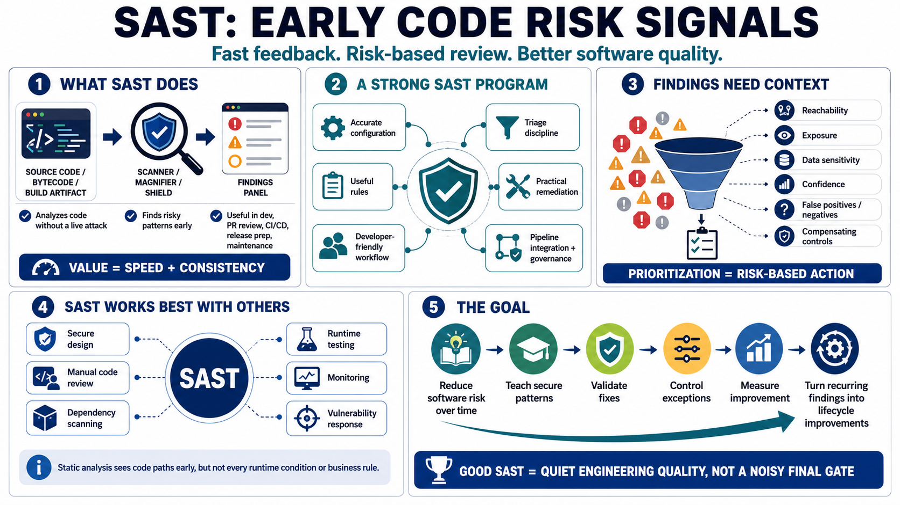

Course Summary and Key Takeaways
Connecting to LMS... Progress: in progress

Narration
SAST helps teams identify risky code patterns early, before software reaches production. It analyzes source code, bytecode, or artifacts without requiring a live attack scenario, and it can provide feedback during development, pull request review, CI/CD, release preparation, and ongoing maintenance. Its value is speed and consistency, but its output still needs context.
Strong SAST programs combine accurate configuration, useful rules, developer-friendly workflows, triage discipline, practical remediation, pipeline integration, and governance. Findings are potential issues, not automatic proof. Reviewers must consider reachability, exposure, data sensitivity, confidence, false positives, false negatives, and compensating controls. Prioritization turns tool output into risk-based action.
SAST works best when paired with secure design, manual code review, dependency scanning, runtime testing, monitoring, and vulnerability response. Static analysis can reason about code paths before execution, but it cannot fully understand every business rule or runtime condition. Other practices fill those gaps and help validate whether software behaves securely in the real environment.
The goal is not to generate more alerts. The goal is actionable evidence that helps developers reduce software risk over time. A durable SAST program teaches secure patterns, validates fixes, controls exceptions, measures improvement, and uses recurring findings to strengthen the development lifecycle. Done well, SAST becomes a quiet source of engineering quality rather than a noisy final gate.